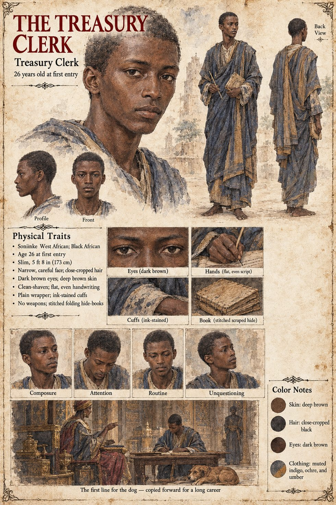

Treasury Clerk (the First Entry)
Treasury clerk who writes the dog's first ration line · unnamed · 26 years old at the first entry on his sheet
The first entry appears in the household accounts of the palace at Kambaso in the month of Havren, seventeen days after the boy Damba is carried out to the burial ground, in the flat hand of a treasury clerk who had not been told why he was writing it: For the dog of the boy Damba — millet, four measures by the moon; dried fish, six; to continue. Queen Yarissa dictates it herself, dry-eyed, from her sleeping-mat, in the voice she reserves for matters she does not intend to discuss. The clerk takes the closing words for a formula, a piece of the chancery's ordinary padding, and never grasps that a queen in mourning has just bound the royal treasury to an obligation with no term. He lives to be a very old man, and spends the whole of a long career copying the line forward from one ledger to the next without once being asked to justify it.
The palace keeps its accounts in a mercantile script borrowed from the caravan trade, scratched onto strips of scraped hide and stitched into long folding books, and the Kept Account, which would not trust an ancestor to ink, has never extended the same suspicion to grain. A dog's ration can therefore be written down by anyone, in any hand, and altered by anyone with a reason to alter it, and nobody in the treasury ever does: the line simply continued, month after month, the longest sentence anyone in Danjeri would ever fail to finish. Forty-two years later the Observer Yandé finds it copied forward without a change of a single word; the Epilogue has no auditor in three centuries querying it. The manuscript does not say whether the clerk who opens the accounts to Yandé in Chapter Eight is the same man; the sheets draw them as two, and the second has a page of his own.
The manuscript gives the clerk his office, his flat hand, his incomprehension and his long career. The sheet's age of 26 at the first entry, slim 5 ft 8 in (173 cm) build, narrow careful face, dark brown eyes, deep brown skin, close-cropped black hair, clean-shaven jaw, plain wrapper, ink-stained cuffs and stitched folding hide-books are its own, as are its panels Composure, Attention, Routine and Unquestioning. Its scene, The first line for the dog — copied forward for a long career, draws a dog on the floor beside the table; the manuscript does not put the dog in the room.
“the longest sentence anyone in Danjeri would ever fail to finish”